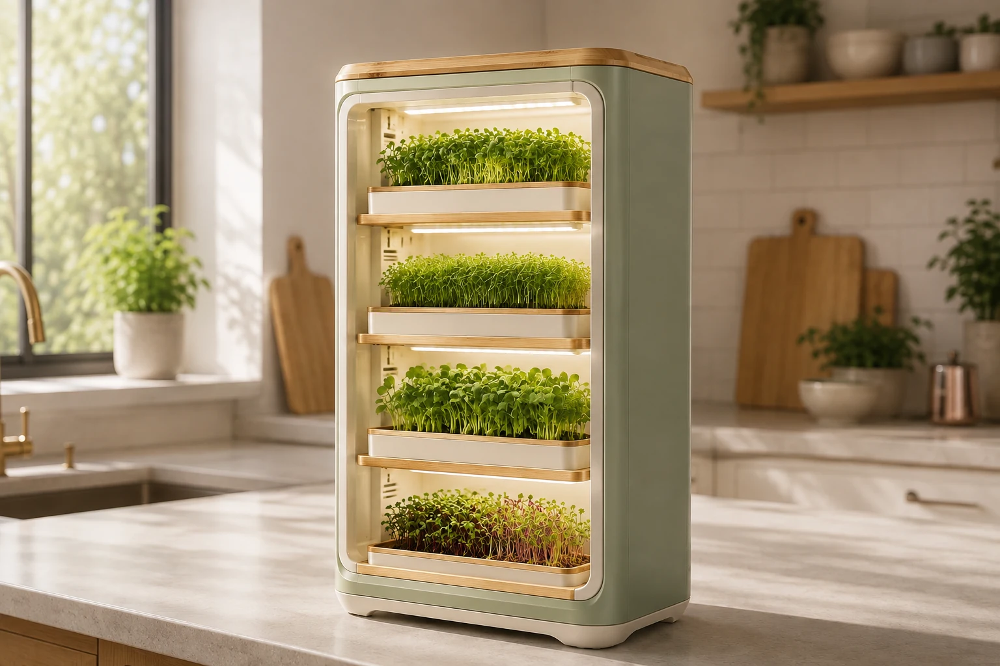
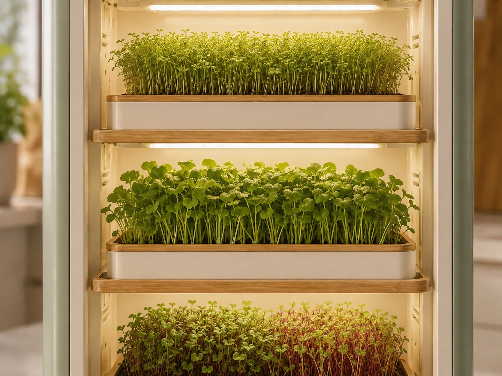

Virelis
Compact multi-tier microgreens growing system
Microgreens.
Level by level.
Designed for indoor growing. Currently in active development.
Join the waitlist
What we know
Compact. Multi-tier. Still evolving.
Virelis is being explored as an indoor microgreens system that uses vertical space and belongs in the kitchen.

- Format
- Multiple growing levels in a compact footprint.
- Place
- Designed for indoor growing close to the kitchen.
- Status
- Tray format, dimensions and final appearance are not yet fixed.
Virelis